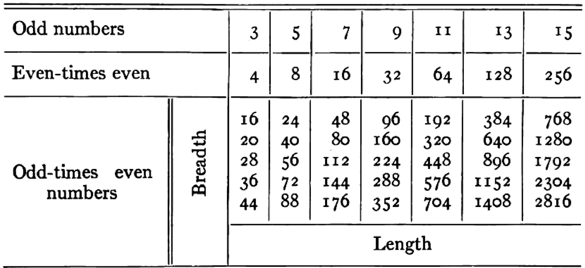

Chapter 10: The Odd-Times Even Number¶
1. The odd-times even is the number displaying the third species of the even, common to both of the aforementioned species as though it were itself a single mean between two extremes: for in one respect it resembles the even-times even, and in another the even-times odd; and wherein it is free of the one, therein it shares with the other, while wherein it holds something in common with the one, therein it differs from the other.
2. This arises whenever an even number admits of being
f. 0215 · p. 199divided into two equal parts and has its own parts likewise divisible—and sometimes even the parts of its parts—yet cannot carry the resolution of its parts all the way down to the monad; such are \(24\), \(28\), and \(40\). Each of these has its own half and invariably a half of its half; and sometimes one is found among them that admits bisection into its parts even further, yet none whatever will ever have its parts divisible into halves all the way down to the naturally indivisible monad.
3. By admitting more than a single cut, then, it resembles the even-times even and departs from the even-times odd; whereas by its cuts never terminating at the monad, it resembles the even-times odd and departs from the even-times even.
4. It belongs to this number alone to possess at once both the properties belonging peculiarly to each of those two and also properties belonging to neither: for of those two, the one had only its greatest part divisible, and the other had only its smallest part indivisible, whereas this number has neither—for it is seen to have more than one divisible section in its greater part, and more than one indivisible section in its lesser part.
5. Again, there are in it certain parts that neither clash in name with their values nor belong to a different kind from them, after the likeness of the even-times even; yet there are also inevitably other parts whose names stand at variance in kind with their values, after the likeness of the even-times odd. For example, in \(24\), the fourth part \(6\), the half \(12\), the sixth part \(4\), and the twelfth part \(2\) do not disagree in name with their values; whereas the third part \(8\), the eighth part \(3\), and the twenty-fourth part \(1\) stand in mutual opposition; and similarly for the rest.
6. This number is generated by a somewhat more varied method, signifying even in its very generation that it is a blend of both. Since the even-times even arises forever from the even numbers doubled from the monad, while the even-times odd arises forever from the odd numbers advancing from the triad, this number must necessarily be woven out of both kinds, as common to both.
7. Let us set forth, then, the odd numbers from \(3\) by themselves in good order in one row:
and onward; and again the even-times even numbers from \(4\) onward in a second row according to their own order:
and onward as far as you wish.
8. Taking from either row (for it makes no difference which) the first number standing in it, multiply in order all the terms in the other row from the beginning and note down the products; then
f. 0216 · p. 200

taking the second number of the same row, multiply those same terms from the top as far as you have them and record the results; then again with the third number multiply the same terms from the top—and as far as you advance, no others will be generated for you except the odd-times even numbers.
9. By way of example, let us take the first number of the row of odds and multiply by it all the terms of the other row in order:
and so to infinity; for these will be:
which must be set down in a single row. Then starting afresh with the second number, do the same—\(5 \times 4\), \(5 \times 8\), \(5 \times 16\), \(5 \times 32\)—for these will be produced:
Next do the same with the third number, \(7\)—\(7 \times 4\), \(7 \times 8\), \(7 \times 16\), \(7 \times 32\)—for the resulting numbers are:
and continuing in the same way as far as you please, the rule will hold true for you:
3 |
5 |
7 |
9 |
11 |
13 |
15 |
|---|---|---|---|---|---|---|
4 |
8 |
16 |
32 |
64 |
128 |
256 |
12 |
24 |
48 |
96 |
192 |
384 |
768 |
20 |
40 |
80 |
160 |
320 |
640 |
1280 |
28 |
56 |
112 |
224 |
448 |
896 |
1792 |
36 |
72 |
144 |
288 |
576 |
1152 |
2304 |
44 |
88 |
176 |
352 |
704 |
1408 |
2816 |
10. When you have arranged the products of each multiplication in its own row, making the rows parallel to one another, there
f. 0217 · p. 201will wondrously appear along the breadth the peculiar property of the even-times odd—that the middle term is always half the sum of the extremes if there is one mean, or if there are two means, they are equal in sum to the extremes—while along the length appears the property of the even-times even—for the product of the extremes equals the square of the mean if there is a single mean, or the product of the two means if there are two. Thus the properties of both belong to this species alone, as being a natural blend of them.